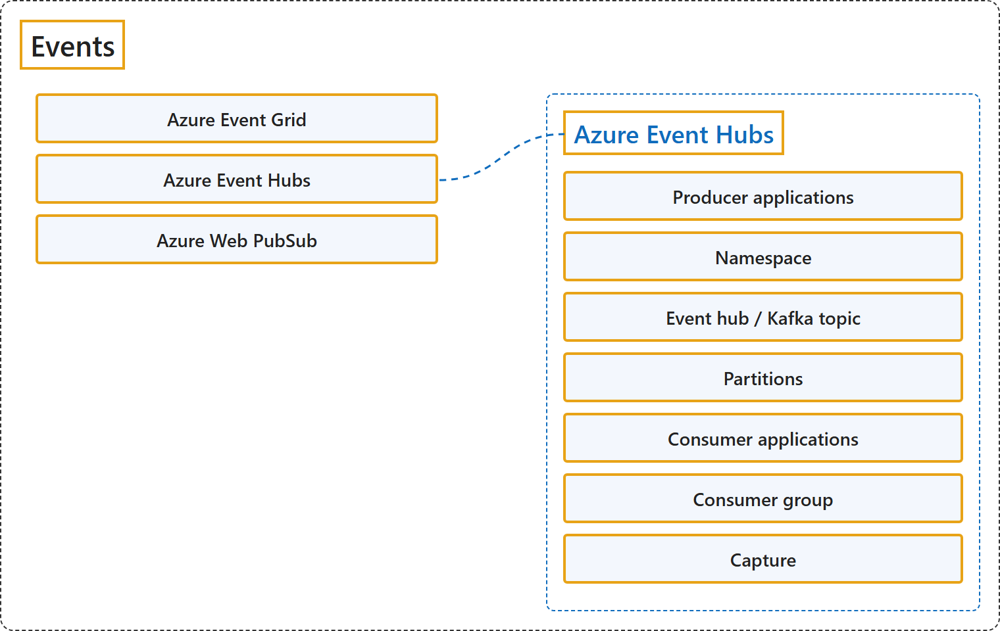

10.4 Events
Classification

Glossary
| Term | Definition | 中文翻译 | Source |
|---|---|---|---|
| Azure Event Grid Azure 事件网格 |
"Azure Event Grid is a highly scalable and fully managed publish-subscribe service for message distribution." | Azure 事件网格是一种高度可扩展、完全托管的发布-订阅服务，用于消息分发。 | Microsoft, 2026a, para. 1 |
| Azure Event Hubs Azure 事件中心 |
"Azure Event Hubs is a fully managed, real-time data streaming platform that can ingest millions of events per second with low latency." | Azure 事件中心是一个完全托管的实时数据流式处理平台，能够以低延迟每秒引入数百万个事件。 | Microsoft, 2026b, para. 1 |
| Producer applications 生产者应用程序 |
"Applications that send events to Event Hubs using Event Hubs SDKs, Kafka producer clients, or HTTPS" | 向事件中心发送事件的应用程序，使用事件中心 SDK、Kafka 生产者客户端或 HTTPS | Microsoft, 2026b, "How it works", Core components table, row 1 |
| Namespace 命名空间 |
"Management container for one or more event hubs. Handles streaming capacity, network security, and geo-disaster recovery at the namespace level" | 一个或多个事件中心的管理容器。在命名空间级别处理流式处理容量、网络安全和异地灾难恢复 | Microsoft, 2026b, "How it works", Core components table, row 2 |
| Event hub / Kafka topic 事件中心 / Kafka 主题 |
"An append-only distributed log that organizes events. Contains one or more partitions for parallel processing" | 一个组织事件的只追加分布式日志。包含一个或多个分区，用于并行处理 | Microsoft, 2026b, "How it works", Core components table, row 3 |
| Partitions 分区 |
"Ordered sequences of events used to scale throughput. Think of partitions as lanes on a freeway—more partitions enable higher throughput" | 有序的事件序列，用于扩展吞吐量。可以把分区看作高速公路上的车道：分区越多，吞吐量越高 | Microsoft, 2026b, "How it works", Core components table, row 4 |
| Consumer applications 使用者应用程序 |
"Applications that read events by tracking their position (offset) in each partition. Can use Event Hubs SDKs or Kafka consumer clients" | 读取事件的应用程序，方式是跟踪自己在每个分区中的位置（偏移量）。可以使用事件中心 SDK 或 Kafka 使用者客户端 | Microsoft, 2026b, "How it works", Core components table, row 5 |
| Consumer group 使用者组 |
"A logical view of the event hub that enables multiple consumer applications to read the same stream independently, each maintaining its own position" | 事件中心的一个逻辑视图，让多个使用者应用程序各自独立地读取同一个流，每个应用程序维护自己的位置 | Microsoft, 2026b, "How it works", Core components table, row 6 |
| Capture 捕获 |
(context) "Capture your streaming data in near real time to Azure Blob Storage or Azure Data Lake Storage for long-term retention or batch analytics." | （语境）将流式数据近实时地捕获到 Azure Blob 存储或 Azure Data Lake Storage，用于长期保留或批量分析。 | Microsoft, 2026b, "Key capabilities", "Capture", para. 1 |
| Azure Web PubSub Azure Web PubSub |
"Azure Web PubSub is a fully managed service for building applications that deliver updates in real time." | Azure Web PubSub 是一种完全托管的服务，用于构建实时推送更新的应用程序。 | Microsoft, 2026c, para. 1 |
References
- Microsoft. (2026a, July 23). What is Azure Event Grid? Microsoft Learn. https://learn.microsoft.com/en-us/azure/event-grid/overview
- Microsoft. (2026b, January 28). What is Azure Event Hubs? Microsoft Learn. https://learn.microsoft.com/en-us/azure/event-hubs/event-hubs-about
- Microsoft. (2026c, August 6). What is Azure Web PubSub service? Microsoft Learn. https://learn.microsoft.com/en-us/azure/azure-web-pubsub/overview